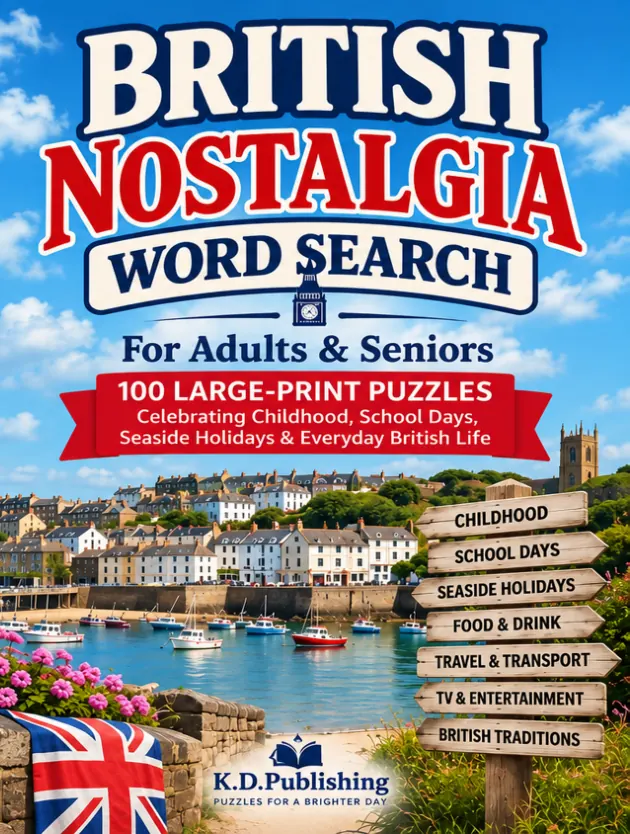
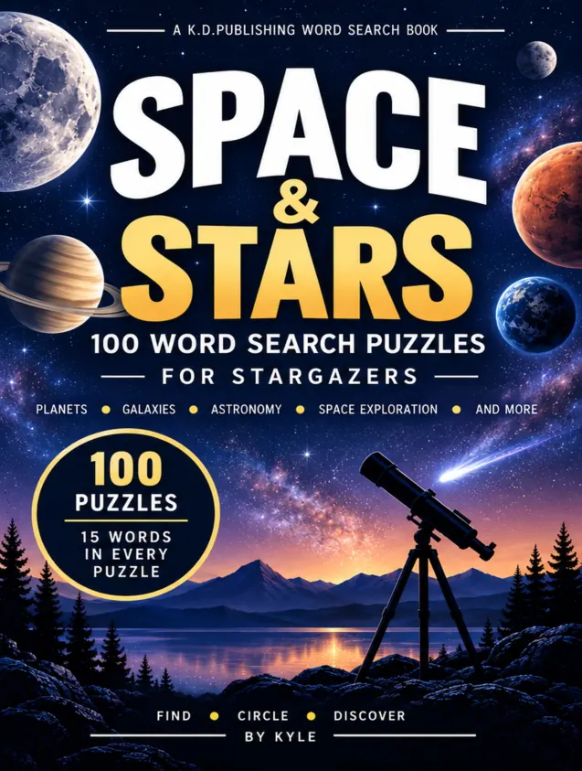
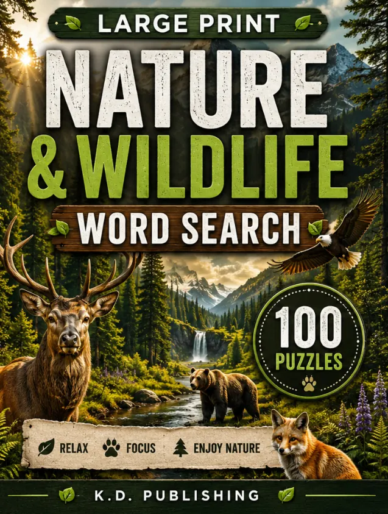
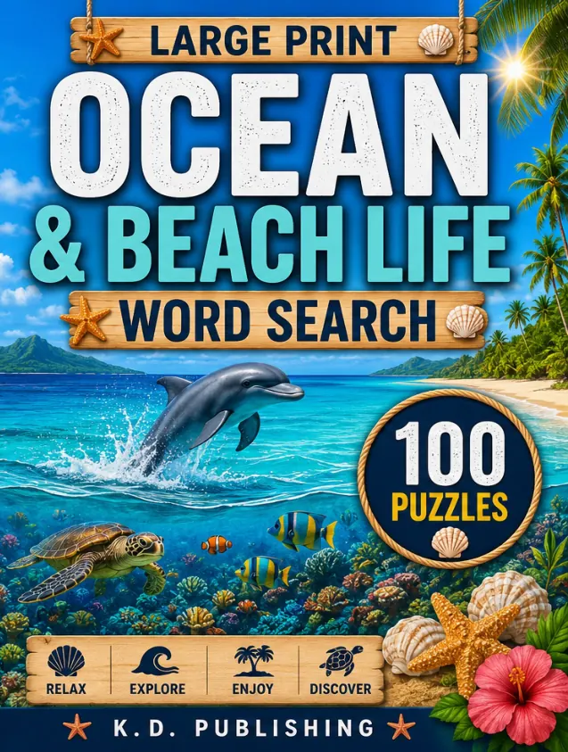

Word Search & Puzzle Books · In reviewLook inside ↓
British Nostalgia Word Search: For Adults & Seniors: 100 Large-Print Puzzles Celebrating Childhood, School Days, Seaside Holidays & Everyday British Life
A large-print word search collection around familiar moments from British life.
- Format
- Paperback
- Author
- Kyle Dyer
- Collection
- Word Search & Puzzle Books
Paperback in review. An Amazon purchase link will be added after publication.
Actual book pages
Look inside
Reduced-size samples from the finished interior. Tap a page for a closer look.
Keep exploring
View category ↗More from this shelf

Word Search & Puzzle Books
Space & Stars
Word searches inspired by planets, galaxies and astronomy, with an answer key.
See inside
Word Search & Puzzle Books
Nature & Wildlife
Outdoor-themed word searches covering animals, forests, birds and national parks.
See inside
Word Search & Puzzle Books
Ocean & Beach
Ocean, beach and sea-life themed word searches with an answer key.
See inside